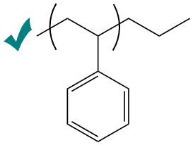

Why does P-OSRA return garbage when I give it an image file?
There are several reasons why P-OSRA may have failed to return the proper output. Most commonly, it is one of the following problems:
- You drew one of the braces intersecting the very end of a bond
- The braces are, for some reason, offset
- The image is too 'grainy' or 'blurry'
- Other formatting issues (see third row for one example)
You can see pictures of both the issues and the remedies for these problems below.
| Common Problems and Resolutions | ||
|---|---|---|
| Here we see that one of the braces intersects the very end of one of the bonds. This is non-ideal. |  |
 |
| Here we have the braces offset. Sometimes this will not be as obvious. Check your images carefully! |  |
 |
| Here we see two problems. The first problem is the blurriness of the first image; the second problem is the abnormally large whitespace between the marked methine group and attached methyl group. The image on the right resolves both issues. |  |
|